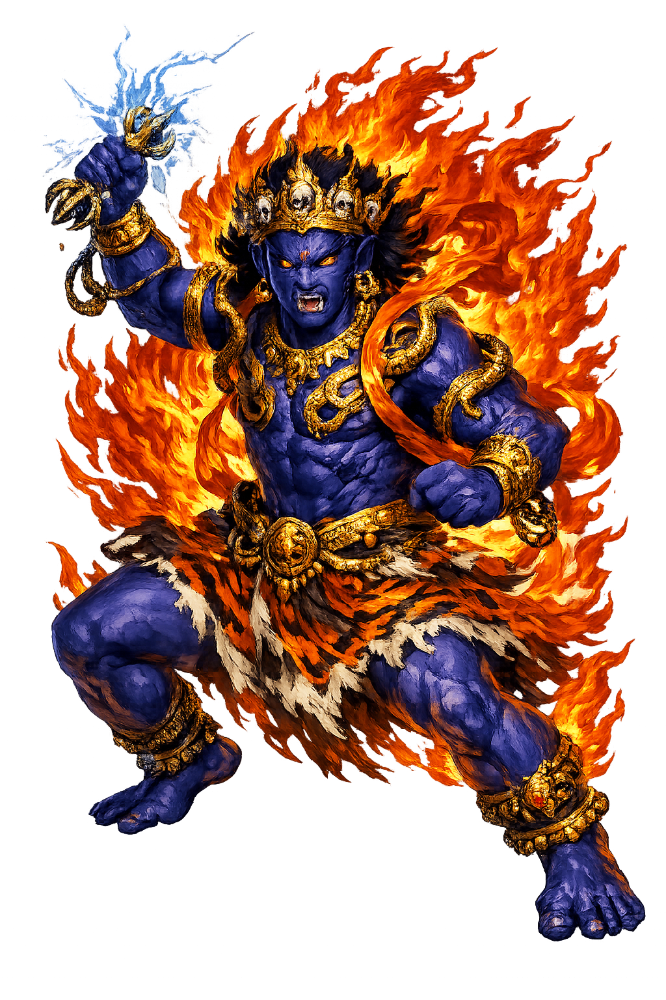

The Authentic Orthography
Thunderbolt Holder, Protection · The Vajra-Bearer · Lord of Secret Power

Unicode restoration and ASCII comparison
वज्रपाणि
The name in its original Buddhist form. Vajrapāṇi (वज्रपाणि) is attested in the source tradition — “The Vajra-Bearer — wielder of the thunderbolt, protector of the Buddha (vajra + pāṇi 'in the hand')”. Its macron-length vowels and nasal retroflexes carry the full phonetic and orthographic weight of the source tradition.
vajrapani
Reduced to plain vajrapani, the name loses everything that made it specific: macron-length vowels and nasal retroflexes. What remains is an ASCII string that machines can parse but that no longer speaks with its original voice.
Vajrapāṇi
The Unicode restoration recovers what ASCII flattened. Vajrapāṇi restores macron-length vowels and nasal retroflexes, returning the name to its original written dignity. The domain encodes to Punycode, but the browser displays the truth.
Vajrapāṇi.com → xn--vajrapi-x3a0658d.com
The non-ASCII characters in Vajrapāṇi are encoded while the ASCII remains visible. To the DNS, it is Punycode. To humanity, it is Vajrapāṇi.
How Vajrapāṇi travels from ancient script to the modern URL
How Vajrapāṇi was spoken
The Buddha's Shadow, the Lord of Secrets, and the Power of the Three Families
Vajrapāṇi is the power of the Buddhas in person: the thunderbolt-bearer who walks at the Buddha's shoulder in the earliest Gandhāran panels, the enforcer who once held a blazing club over a liar's head in the Pāli canon, and the Lord of Secrets to whom the tantras themselves were entrusted.
Thunderbolt and diamond in one implement: the irresistible force that is also the unbreakable thing.
In Gandhāran art he stands beside the Buddha at every step — the first bodyguard of the Dharma.
Guhyakādhipati: the keeper and compiler of the tantras, the power behind the esoteric throne.
With Mañjuśrī and Avalokiteśvara — power beside wisdom and compassion, the lords of the three families.
Stories of Vajrapāṇi
Vajrapāṇi's mythology runs from the Pāli canon to the highest tantras without a break: the same thunderbolt, passed from Indra's hand to the Buddha's bodyguard to the Lord of Secrets.
His earliest certain appearance is already dramatic. In the Dīgha Nikāya's Ambaṭṭha Sutta, the proud young brahmin Ambaṭṭha twice evades the Buddha's direct question about his lineage; and there appears above his head the yakkha Vajirapāṇi, holding aloft a great blazing iron club, ready to split his skull into seven pieces if he refuses a third time. Ambaṭṭha answers. The episode is the whole doctrine in miniature: the thunderbolt exists not to strike but to make truth the easier choice.
When Gandhāran sculptors of the early centuries CE carved the Buddha's life in stone, they needed a protector — and they found him in the Greek hero their patrons already knew. The muscular attendant at the Buddha's shoulder, sometimes bearded and lion-skinned, is Heracles with his club swapped for a vajra: Vajrapāṇi in the dress of the strongest man the Mediterranean could imagine. It is the most candid syncretism in ancient art — the thunderbolt-bearer wearing another culture's power, because power was the job description.
The esoteric tradition made him its archive. As Guhyakādhipati, Lord of the Guhyakas — the secret ones — Vajrapāṇi is held to have received, compiled, and transmitted the tantras: when the hidden teachings were entrusted to a single guardian, the guardianship was his. The Tattvasaṃgraha and the Guhyasamāja cycle stage him as the interlocutor who asks the questions and keeps the answers, and Tibetan historiography names him the compiler of whole classes of tantra. The bodyguard had become the librarian of the lightning.
Himalayan Buddhism arranges the pantheon's virtues into three lords of three families: Mañjuśrī's wisdom, Avalokiteśvara's compassion, Vajrapāṇi's power — together embodying the awakened body, speech, and mind. His own ferocious form, Nīlambaradhara, the Blue-Clad, tramples the serpent of obstruction in the warrior's stance, wreathed in snakes, the vajra raised. The triad is painted over doorways across Tibet, Nepal, and Bhutan: the three things a practitioner must grow, and the three that guard the door until they do.
Vajrapāṇi is the reminder that gentleness without power is only politeness: the Dharma keeps a bodyguard because the truth, like the Buddha before Ambaṭṭha's question, is sometimes one evasion away from being talked to death. His thunderbolt is never swung in the texts — it is held, blazing, where it can be seen. The discipline he guards is the one every practitioner knows: the strength to make honesty the path of least resistance, first of all in oneself.
Enter Extended Lore